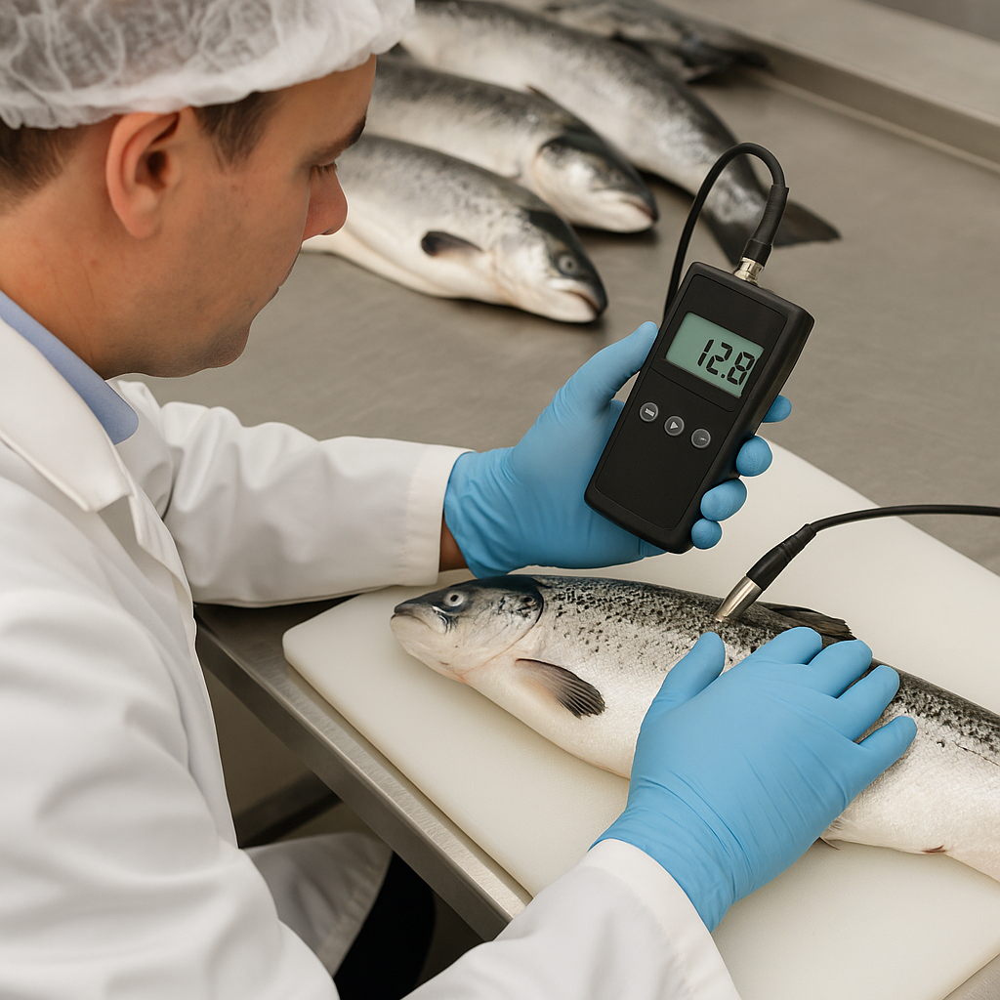
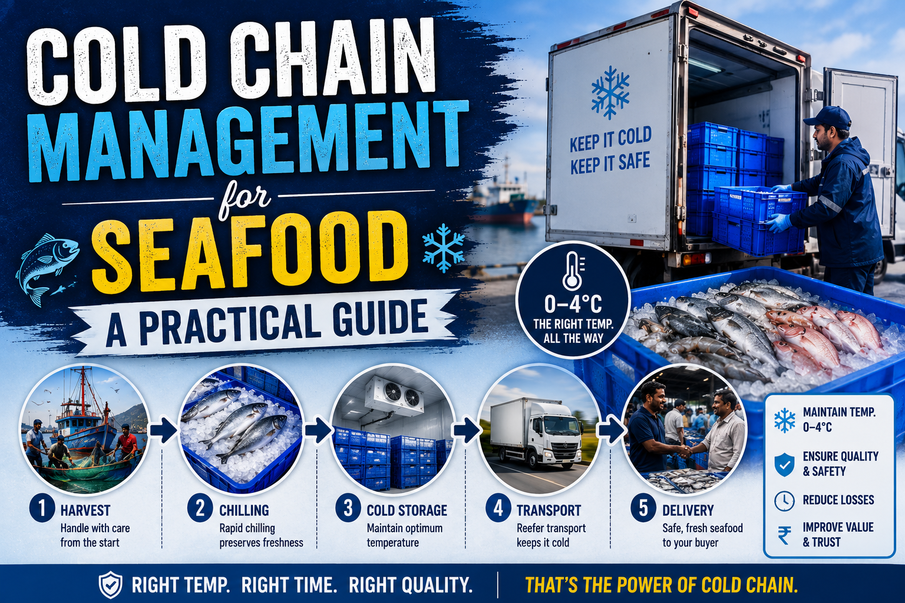

Blog & Insights
Practical guides on fish trading, cold chain logistics, harbour technology, and sustainable seafood — written for buyers, suppliers, and industry professionals across India.
 Latest · Featured
Latest · Featured
How India's Fish Trade Works: From Harbour to Wholesale Buyer
Understand the full journey of seafood in India — from landing centres and auction floors to grading, cold storage, and delivery to hotels, retailers, and exporters.
Read articleLatest articles
5 guides for seafood professionals

Sustainable Seafood Trading in India: What Buyers and Suppliers Should Know
Responsible sourcing, seasonal fishing, and traceability requirements — how sustainability shapes modern seafood procurement in India.

Digital Fish Auctions: Why Harbour Trading Is Going Online
Paper ledgers and verbal bids are giving way to digital auctions. Here's what changes for fishermen, agents, and wholesale buyers.

How to Choose a Reliable Wholesale Seafood Supplier in India
Licences, grading standards, traceability, and delivery reliability — the criteria institutional buyers should evaluate before signing a supplier.

Cold Chain Management for Seafood: A Practical Guide
Temperature control from harbour to buyer is non-negotiable. Learn the stages, standards, and checks that keep fish fresh across India's supply chain.
Ready to trade with confidence?
BlueHarvest Exchange connects verified seafood suppliers with institutional and commercial buyers through licensed offline trading and digital platform technology.